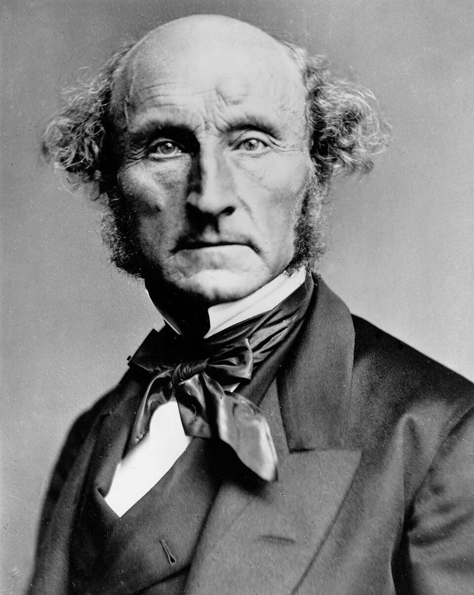
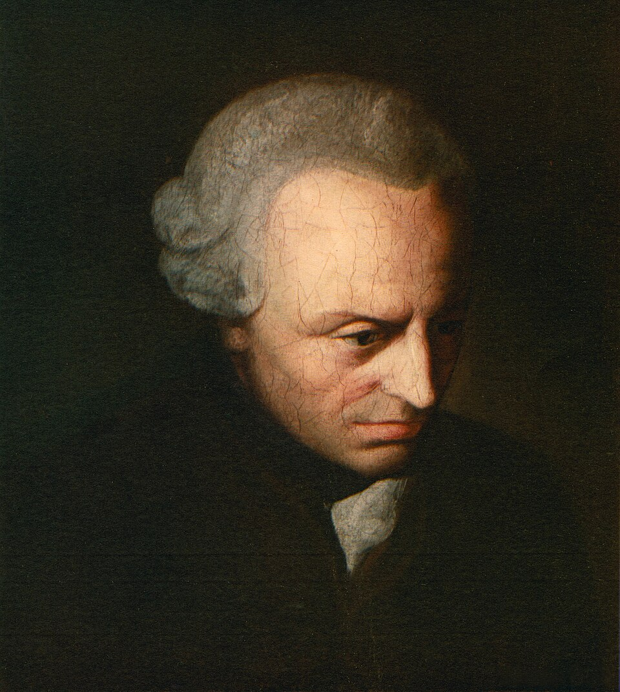

01/10/2026
Entre os dois maiores defensores do utilitarismo, Mill foi o filósofo mais humano; Bentham, o mais consistente. (SANDEL, M. Justiça: o que é fazer a coisa certa. 12. ed., 2013, p. 71.)


[…] fazer um homem feliz é muito diferente de fazer dele um homem bom. Torná-lo astuto não é torná-lo virtuoso. (KANT, I. Fundamentação da Metafísica dos Costumes.)
bit.ly/filosofia-vc
A missão dos governantes consiste em promover a felicidade da sociedade, punindo e recompensando. A parte da missão de governo que consiste em punir constitui mais particularmente o objeto da lei penal. A obrigatoriedade ou necessidade de punir uma ação é proporcional à medida que tal ação tende a perturbar a felicidade e à medida que a tendência do referido ato é perniciosa. A felicidade consiste naquilo que já vimos, ou seja, em desfrutar prazeres e em estar isento de dores.
BENTHAM, J. Uma introdução aos princípios da moral e da legislação. São Paulo: Abril Cultural, 1974 (adaptado).
Qual perspectiva de justiça emerge da relação, estabelecida no texto, entre punição e felicidade?
A Aplicação de meios para atingir um fim.
B Imposição de regras para estabelecer um dever.
C Sobreposição de princípios para fundamentar um direito.
D Criação de parâmetros para reconhecer uma prescrição.
E Elaboração de convenções para referendar um costume.
A moralidade, Bentham exortava, não é uma questão de agradar a Deus, muito menos de fidelidade a regras abstratas. A moralidade é a tentativa de criar a maior quantidade de felicidade possível neste mundo. Ao decidir o que fazer, deveríamos, portanto, perguntar qual curso de conduta promoveria a maior quantidade de felicidade para todos aqueles que serão afetados.
RACHELS, J. Os elementos da filosofia moral. Barueri-SP: Manole, 2006.
Os parâmetros da ação indicados no texto estão em conformidade com uma
A fundamentação científica de viés positivista.
B convenção social de orientação normativa.
C transgressão comportamental religiosa.
D racionalidade de caráter pragmático.
E inclinação de natureza passional.
Princípios práticos são subjetivos, ou máximas, quando a condição é considerada pelosujeito como verdadeira só para a sua vontade; são, por outro lado, objetivos, quando acondição é válida para a vontade de todo ser natural.
KANT, I. Crítica da razão prática. Lisboa: Edições 70, 2008.
A concepção ética presente no texto defende a
A universalidade do dever.
B maximização da utilidade.
C aprovação pelo sentimento.
D identificação da justa medida.
E obediência à determinação divina.
Ubuntu é um sistema de crenças, uma epistemologia, uma ética coletiva e uma filosofia humanista espiritual do sul da África. É mais um fundamento ético coletivo do que qualquer outra coisa, embora também seja considerado uma forma de filosofia e epistemologia africanas nativas. É uma forma ética de conhecer e de ser em comunidade. É muito menos um conceito abstrato do que uma expressão coletiva cotidiana de experiências vividas, centradas em uma ética comunitária do que significa ser humano. Ubuntu é uma abreviação de um provérbio da África do Sul: uma pessoa é uma pessoa por meio de seu relacionamento com outros.
SWANSON, D. Ubuntu, uma alternativa ecopolítica à globalização econômica neoliberal. IHU Revista do Instituto Humanitas Unisinos, n. 353, dez. 2010.
A perspectiva filosófica africana apresentada no texto contrasta com as formulações éticas da tradição eurocêntrica porque
A destaca os padrões de identidade.
B preconiza as condições de liberdade.
C ressalta os atributos de individualidade.
D enfatiza os elementos de racionalidade.
E valoriza os vínculos de intersubjetividade.
A regra de ouro, popularmente conhecida pelo provérbio "Trate os outros como gostaria de ser tratado", é um dos princípios morais mais onipresentes. A noção subjacente, que apela para o senso ético mais básico, se expressa de uma forma ou de outra em praticamente todas as tradições religiosas, e poucos filósofos morais deixaram de invocar a regra ou pelo menos de tecer comentários a respeito da relação com seus próprios princípios.
DUPRÉ, B. 50 grandes ideias da humanidade. São Paulo: Planeta do Brasil, 2016.
O princípio ético apresentado no texto, como elemento estruturante da vida em sociedade, se traduz pela seguinte formulação teórica:
A Doutrina teleológica.
B Imperativo categórico.
C Pensamento utilitarista.
D Secularização inautêntica.
E Raciocínio consequencialista.
Adam Smith via o açougueiro e o padeiro não só como indivíduos buscando seus interesses financeiros, mas como pessoas moralmente motivadas dentro de uma sociedade. A base da moral era a empatia e o julgamento, instaurando uma distinção entre o que queremos fazer e o que sentimos que devemos fazer.
COLLIER, P. O futuro do capitalismo. Porto Alegre: LP&M, 2019.
O texto defende uma motivação capitalista para o campo dos negócios, na qual o lucro se mostra associado à
A consolidação do poder político.
B procura de satisfação subjetiva.
C estruturação do monopólio comercial.
D percepção de responsabilidade ética.
E conquista do reconhecimento público.
TEXTO I
Duas coisas enchem o ânimo de admiração e veneração sempre crescentes: o céu estrelado sobre mim e a lei moral em mim.
KANT, I. Crítica da razão prática. Lisboa: Edições 70, s/d (adaptado).
TEXTO II
Duas coisas admiro: a dura lei cobrindo-me e o estrelado céu dentro de mim.
FONTELA, O. Kant (relido). In: Poesia completa. São Paulo: Hedra, 2015.
A releitura realizada pela poeta inverte as seguintes ideias centrais do pensamento kantiano:
A Possibilidade da liberdade e obrigação da ação.
B Aprioridade do juízo e importância da natureza.
C Necessidade da boa vontade e crítica da metafísica.
D Prescindibilidade do empírico e autoridade da razão.
E Interioridade da norma e fenomenalidade do mundo.